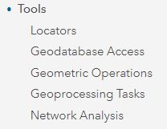

Remember: “How To: Introduction to Your Account”
Remember: “How To: Introduction to Your Account”
User Account Information
| Login page | https://www.arcgis.com/home/signin.html |
Sign In with username and password at the url
Your home page will be the User Group page Select Training Demo - Cadasta
Content will be found within the group
Content can be filtered in various ways
Sign Out of your account by selecting your User Account name in the top-left of your screen
 Remember: “How To: Introduction to Item Types”
Remember: “How To: Introduction to Item Types”
Navigate to Content
See Item Types in the Sidebar
Select item type Maps
Note: There are two sub-item types (1) Web Maps and (2) Map Files
Select item sub-type Web Maps
Note: There are no Map Files sub-type in the demo group and are not covered in this
documentation.
Select Web Map Project Rose Field Collector Map
Click Open in Map Viewer
Navigate back to User Group Content and Select Web Map Project Rose Map - Access to Electricity
Click Open in Map Viewer
Navigate to Content
See Item Types in the Sidebar
Select item type Layers
Note: There are seven sub-item types (1) Feature Layers, (2) Tile Layers, (3) Map
Imager Layers, (4) Imagery Layers, (5) Scene Layers, (6) Tables, and (7) Layer Files
Select item sub-type Feature Layers
Note: This documentation only covers Feature Layers.
Select Feature Layer Project Rose Field Collector PLP
Click Open in Map Viewer
Navigate back to User Group Content and Select Feature Layer Project Rose QA View
Click Open in Map Viewer
Navigate back to User Group Content and Select Feature Layer Project Rose Survey
Click Open in Map Viewer
Navigate to Content
See Item Types in the Sidebar
Select item type Apps
Note: There are three sub-item types (1) Web Apps, (2) Mobile Apps, and (3) Desktop Apps
Select item sub-type Web Apps
Note: here are no Mobile App or Desktop App sub-types in the demo group and are not covered in this documentation.
Select Web App Project Rose Dashboard - Overview
Click View Dashboard
See Dashboard Details by selecting a collected record’s polygon
Navigate back to Content and Select Web App Project Rose Dashboard - QA Dashboard
Click View Dashboard
See Dashboard Details by selecting a collected record’s point
Navigate back to Content and Select Web App Project Rose Dashboard - Resource Metrics
Click View Dashboard
See Dashboard Details by selecting a collected record’s polygon(s)
Note: This dashboard has the possibility of one or more manual selections at one time.
Other Item Types not covered in this documentation are:
Scenes

Tools

Files

Navigate to the Map Viewer by clicking Map from the top bar


You can navigate to the Map Viewer from any Feature Layer item details page by clicking **Open in Map Viewer**

See the My Map page overview

The Home button allows you to navigate back to the main ArcGIS Online (AGOL) navigation options

Select Details to navigate to About, Content, and Legend sections.
Select Content to view layers (and Layer Options)

Select the Layer Options to access Show Legend, Show Table, Change Style, Filter, Perform Analysis, and More Options
Select the Legend to view layers in their symbolized form

.Select Add to add layers to a map
There are multiple options for adding data layers to the map: Search for Layers, Browse Living Atlas Layers, Add Layer from Web, Add Layer from File, and Add Map Notes

Select Basemap to choose a basemap


Navigate to Zoom In, Zoom Out, and Home location by using the Navigation Console

Save your map by selecting Save

Share your map by selecting Share

More Information
Esri Resource Links